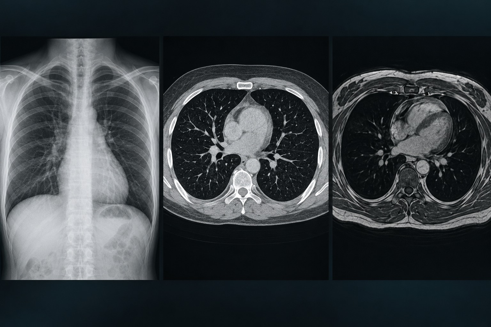

Rural communities may travel hours to reach advanced imaging.
Applied AI · Medical imaging
We’re here to change medical imaging.
Nuvorix AI is building a two-stage imaging pipeline that transforms a single X-ray into CT-like structure and MRI-like soft-tissue views. Our mission is to bring advanced imaging capabilities within reach of more clinics.
Next-generation AI · Wider imaging access
Nuvorix AI · ImagingAI pipeline

X-ray2D projection
CT-like3D structure
MRI-likeSoft-tissue contrast
One X-ray · richer imaging views01 / 02
01
Start with what clinics haveExplore from a familiar, widely used X-ray.
02
Translate in stagesStudy structure first, then contrast.
03
Design for real constraintsKeep deployment realities in view.
Why this work matters
Where you live can shape the imaging you can access.
Advanced imaging depends on equipment, specialist capacity, and the distance to a well-resourced facility. Nuvorix AI is building tools to bring richer imaging capabilities closer to underserved communities.
Many public facilities serve large populations with few scanners.
Availability and affordability can influence which scan a patient receives.
Any new tool must fit the people and conditions around care.
The Nuvorix imaging pipeline
Two stages. A richer view from one X-ray.
Our cascaded translation pipeline tackles the challenge in two steps: first structure, then contrast. Separating the task helps each model focus on a clear imaging objective.
From one projection to CT-like structure
Transform a single 2D X-ray into structured, 3D-like representations and generated slices.
X-rayCT-like slices
From structure to soft-tissue contrast
Build on the intermediate representation to create richer MRI-like soft-tissue contrast views.
CT-likeMRI-like view
Why a two-stage pipeline?
CT slices contain faint soft-tissue signals beneath bone-dominant contrast. Stage two focuses on amplifying those subtle cues into richer soft-tissue views.
Inside the technology
Purpose-built models for every stage.
We combine generative models, reconstruction methods, and carefully tuned training strategies to build a connected multi-modal imaging pipeline.
Experiment · Measure · Retrain
Our training strategy focuses on stable convergence and high-quality outputs, using spectral normalization, exponential moving averages, and mixed-precision training.
CycleGAN
Translate between imaging modalities when perfectly paired scans are limited.
PatchGAN
Enforce local image realism across generated patches.
Latent diffusion
Generate high-resolution slices with rich visual detail.
Custom ResNet
Build spectral-normalized generators for stable, structured outputs.
U-Net
Learn aligned image translations from paired imaging data.
CNN refinement
Refine generated slices using adversarial, perceptual, and cycle-consistency losses.
Engineering through iteration
Every challenge drives a smarter design.
Building a new imaging pipeline means solving for limited data, stable training, and real-world hardware. We turn each constraint into a focused engineering decision.
ChallengeLimited paired scans
ApproachUnpaired CycleGAN training
ChallengeDiscriminator collapse
ApproachTTUR and DiffAugment
ChallengeIdentity collapse
ApproachBalanced cycle and feature-matching losses
ChallengeEdge-device storage limits
ApproachQuantization and selective weights
Experiment→Measure→Retrain
Cloud to edge
Cloud-powered. Designed for the clinic.
Compute, connectivity, and clinic workflows matter as much as model design. Nuvorix AI pairs cloud-scale model development with efficient edge inference close to the point of care.
Cloud training
Train and compare models on AWS SageMaker and EC2 GPU infrastructure, with datasets and checkpoints stored in S3.
NVIDIA A10 · 24 GB GPU memoryClinic-side edge inference
Run compact imaging models close to clinics, bringing advanced AI into real-world care environments.
Edge platform: NVIDIA Jetson AGX OrinContinuous learning loop
Run focused experiments, measure against relevant criteria, and retrain as evidence develops.
Experiment · Measure · Retrain
Our vision for medical imaging
More imaging capability. In more places.
Nuvorix AI is building toward a future where advanced imaging insights are not limited by a clinic’s location or infrastructure.
Unlock richer imaging views from a widely available X-ray.
Combine generative AI and reconstruction into one connected pipeline.
Bring powerful imaging models to practical edge hardware.
Build for hospitals and communities underserved by today’s imaging infrastructure.
Who we serve
Built for the people moving imaging forward.
Nuvorix AI is designed for an entire imaging ecosystem—connecting the needs of care providers, radiology teams, public health, and research.
Hospitals & clinic networks
Extend imaging capability across facilities and communities.
Tele-radiology teams
Support imaging workflows that serve clinics across distance.
Governments & NGOs
Help widen access in underserved and resource-constrained regions.
Researchers & insurers
Build partnerships that advance imaging innovation and broader adoption.
Meet the founders
A team building at the edge of AI and medical imaging.
Nuvorix AI brings together machine learning, edge engineering, and a shared drive to make imaging innovation reach further.
Founding team
Syeda Jaseen Sara
CEO & Co-founderAn accomplished technologist and machine learning engineer based in the Greater Hyderabad Area, Syeda has built an academic and research foundation through education and engineering roles at IIT Ropar and IIT Madras. Her work spans artificial intelligence, data systems, and edge computing. Alongside Jatin Tarange, she led Nuvorix AI’s first-place project at the Esper AI Hackathon in Bengaluru, designing an edge-AI imaging system for communities with limited access to advanced scans.
1st place · Esper AI Hackathon15+ consecutive hackathon wins
Founding team
Jatin Tarange
CTO & Co-founderA machine learning engineer and data technologist, Jatin focuses on computer vision, deep learning, and edge-AI architecture. He co-led Nuvorix AI’s first-place Esper AI Hackathon project with Syeda Jaseen Sara, building an imaging pipeline that transforms standard X-rays toward richer MRI-like views. His work optimizes models for compact local hardware, so clinic-side inference can run without depending on live cloud computation or expensive remote servers.
1st place · Esper AI Hackathon15+ consecutive hackathon wins
Founding team
Syeda Rida
Co-founder & Data ScientistSyeda Rida is a co-founder and data scientist at Nuvorix AI. She brings a data science perspective to the team’s work in AI and medical imaging, contributing to the shared mission of making imaging innovation more accessible to clinics and communities with limited infrastructure.
15+ consecutive hackathon winsAI for wider imaging access
Nuvorix AI · Imaging research
The next era of medical imaging should reach everyone.
We are building AI-powered medical imaging designed to bring richer insights to more clinics, with practical infrastructure and access at the center.